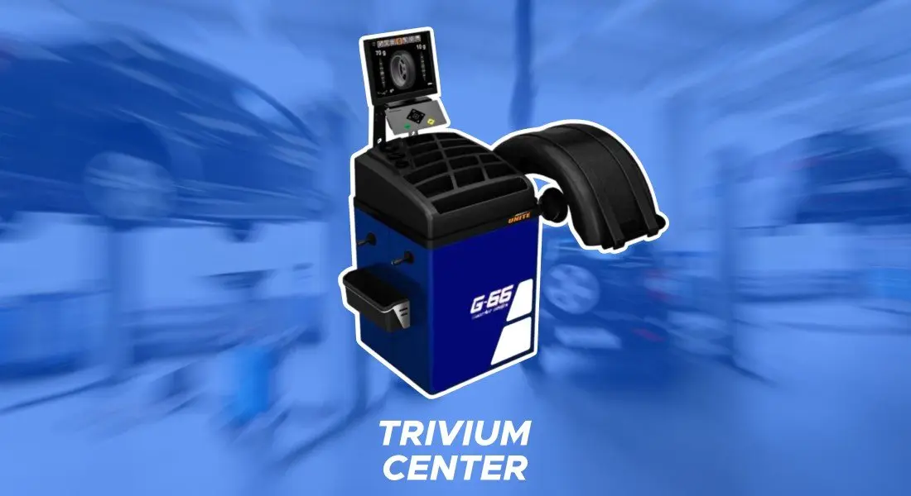

En el mundo del servicio automotriz, la precisión es clave para garantizar la seguridad y el rendimiento de los vehículos. Una de las herramientas fundamentales en los talleres mecánicos es la balanceadora de ruedas, que permite corregir desbalances en las llantas y asegurar una conducción suave y estable. Dentro de sus funciones, la autocalibración juega un papel crucial para garantizar mediciones exactas y confiables. Pero, ¿qué es exactamente la autocalibración y por qué es importante?
¿Qué es la Autocalibración?
La autocalibración es un proceso mediante el cual una balanceadora de ruedas ajusta y verifica sus propios sensores y mecanismos de medición sin necesidad de intervención manual extensa. Esto se realiza comparando los valores obtenidos con referencias predefinidas, corrigiendo cualquier desviación y asegurando que las mediciones sean precisas.
Este proceso se puede activar de manera periódica o cuando el equipo detecta una posible desalineación en sus sensores. Algunas balanceadoras incluyen un modo de autocalibración automático, mientras que en otras es necesario que el técnico inicie la secuencia de calibración manualmente.
Beneficios de la Autocalibración
- Precisión Constante: Asegura que las mediciones sean exactas, evitando errores que podrían generar desbalances en las ruedas.
- Reducción de Errores Humanos: Disminuye la necesidad de ajustes manuales frecuentes, minimizando la posibilidad de errores causados por calibraciones incorrectas.
- Ahorro de Tiempo: Permite a los técnicos realizar diagnósticos rápidos y eficientes sin la necesidad de calibraciones complejas.
- Mayor Vida útil del Equipo: Mantener la balanceadora calibrada reduce el desgaste y previene fallas prematuras en los sensores y mecanismos internos.
- Mejora en la Calidad del Servicio: Ofrecer un servicio preciso y confiable genera confianza en los clientes y mejora la reputación del taller.
¿Cómo Saber Cuándo Realizar una Autocalibración?
Si bien algunas balanceadoras realizan este proceso de manera automática, hay situaciones en las que es recomendable realizar una calibración manual:
- Cambio de Ubicación: Si la balanceadora ha sido movida o transportada.
- Lecturas Inconsistentes: Si los resultados de balanceo varían entre mediciones de la misma rueda.
- Aviso del Sistema: Algunas máquinas cuentan con alertas que indican la necesidad de recalibración.
- Mantenimiento Periódico: Seguir las recomendaciones del fabricante para mantener la exactitud del equipo.
Conclusión
La autocalibración es una función esencial en una balanceadora de ruedas, ya que garantiza mediciones precisas y confiables. Su implementación no solo optimiza el tiempo de trabajo en el taller, sino que también mejora la calidad del servicio y prolonga la vida útil del equipo. Invertir en una balanceadora con autocalibración o asegurarse de realizar este proceso de manera regular es clave para mantener un taller eficiente y competitivo en el mercado.